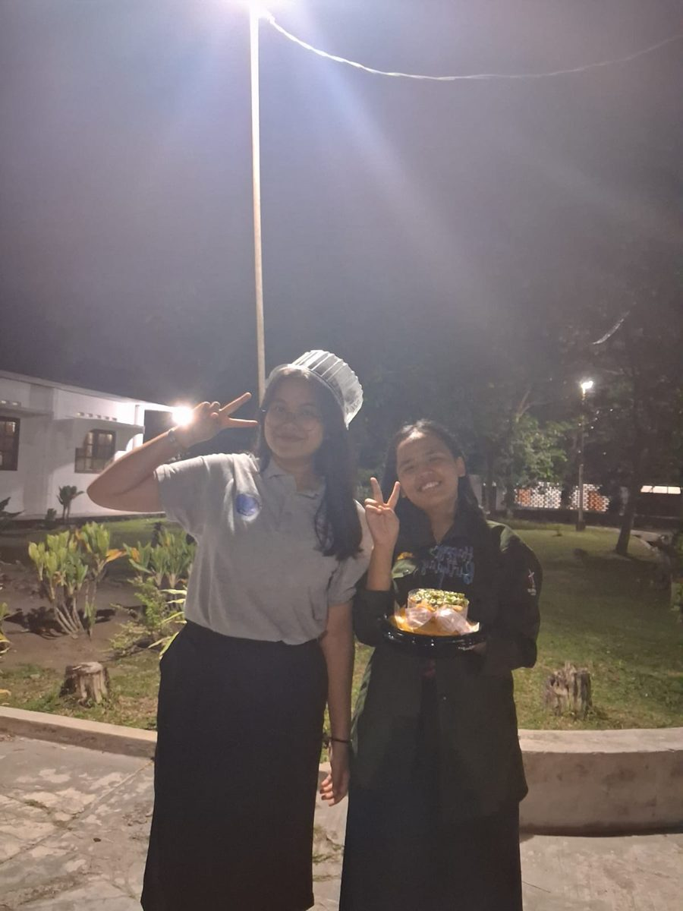
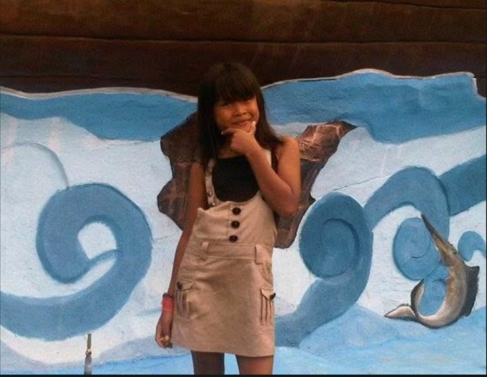

ketuk kuenya untuk meniup lilin

Hmm, bingung mau ngetik apa… jadiii, selamat wisuda! Eh iya tahe, oo iya, selamat ulang tahun jugaaaa! Iya iya, nanti kita rayakan tgl 18 Januari lagi tahun depan, kuingat pun ante.
Semoga kakak sehat selalu, panjang umur, murah rezeki, semangat magang barunyaaa! Kita beli es juga nanti kalau kakak udah jadi bioshop.
Jangan marah-marah, apalagi sampai melupakan aku. Aku bakal terus chat kakak biar kakak jangan lupa samaku.

Jangan lupa janji kakak, kita ke pasar malam. Masih kuingat itu.